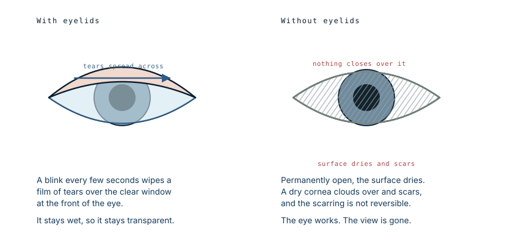

He was not going blind from the fire
Patrick Hardison's eyes survived the burns. What did not survive were his eyelids, and fourteen years later that was the thing taking his sight. The most extensive face transplant performed to that date was, in the end, an operation to save his vision.
What eyelids actually do
The clear window at the front of the eye has no blood supply of its own. It is kept alive and kept transparent by the film of tears spread across it, and that film is renewed by blinking. A blink every few seconds is not a reflex to protect against dust. It is the maintenance system for the only optically clear tissue in the body.

Remove the lids and the surface is permanently exposed. It dries between blinks that never come, and a dry cornea does not simply feel uncomfortable. It clouds, ulcerates and scars, and the scarring is permanent. The eye behind it keeps working perfectly. The view through it disappears.
His ophthalmologist told him he would eventually go blind. That was the clock the transplant was racing.
Why seventy operations were not enough
He had more than seventy procedures over fourteen years, rebuilding what could be rebuilt from skin grafts, and he had implants placed to anchor prosthetic ears. Each operation produced a small improvement and none of them solved the problem.
Eyelids are why. They are among the thinnest and most specialised structures in the body: a few layers of skin, a sheet of muscle, a stiffening plate of dense tissue, and a lining that must be smooth enough to sweep across the eye thousands of times a day without abrading it. Nothing borrowed from elsewhere on the body reproduces that. A graft can cover the socket. It cannot blink.
This is the same limit described in the case of the transplant candidate who was reconstructed rather than transplanted: conventional surgery restores structure, and there are a small number of structures it cannot restore. Lips are one. Eyelids are another.
Finding a face
The donor requirements for a face are unlike those for any other organ, and this is the part of the story that rarely gets told.
A kidney needs to match immunologically. A face has to match immunologically and visually: skin colour, hair colour, blood type, and — because the transplanted soft tissue is draped over the recipient's own skeleton — the underlying bone dimensions. The team measured distances between the eyes, the nose and the mouth. The organ procurement organisation described it as the hardest search it had ever run.
Hardison joined the list in August 2014. He waited eleven months, and by his friends' account the waiting was close to unbearable. When the match came, the facial skeletons differed by one to two millimetres.
The donor was David Rodebaugh, a 26-year-old bike mechanic who died after a head injury cycling in Brooklyn without a helmet. His mother consented to donation. His heart, liver, kidneys, corneas, bone and skin were donated alongside his face.
How a transplanted face moves
The commonest question about this operation has an answer that surprises people.
Rodriguez laid the donor's skin, nerves and muscle over Hardison's own facial muscles rather than removing them. The intention was that over the following months the two would connect — and the phrase he used afterwards is the precise one: if the muscles are aligned correctly, the recipient's muscles will power the new face.
So the face is the donor's tissue, moved by the recipient's own nerves and muscles. Which is also why a transplanted face does not make the recipient look like the donor: the bone underneath, and the movement driving it, are still his.
The vetting
Selection is described by Rodriguez as probably the most important factor in the operation, and the process here went well beyond the usual medical workup. The team assessed not only Hardison but his family, friends and neighbours.
The reason is unglamorous and decisive. A transplanted face survives only as long as the immunosuppression continues, which means daily medication and regular appointments for life, without exception. A patient who cannot sustain that will lose the graft and may lose their life. Rodriguez also noted the opposite risk in an eager patient: someone ready to sign anything to get it done needs the process slowed down, not sped up, so that they understand what they are agreeing to.
He was told he had roughly a fifty-fifty chance of surviving the surgery. He accepted it.
Afterwards
The operation took 26 hours. Nine days later he was shown himself in a mirror, deliberately and with his surgeon present, because patients who catch sight of themselves alone while still swollen tend to be frightened by what they see.
He had eyelids. He also had to relearn how to swallow and speak, both of which the surgery had disrupted, and he spent weeks in therapy regaining them. His sensation returned gradually, and eventually he could smile.
His two youngest sons had never seen his face before the fire; they were born afterwards. He sent them a photograph before they travelled to New York, so the first sight of him would not be a shock.
What he described as the milestone was not the mirror. It was going into a department store and being nobody in particular.
What this case teaches
A face transplant looks like an operation about appearance and this one was not. The eye needs a lid over it to stay clear, and nothing grafted from elsewhere on the body can be made to blink, so seventy reconstructive operations could not stop the sight loss that a transplant could. It also shows what the assessment is really weighing: not whether someone deserves a new face, but whether the specific thing they have lost is one of the few things conventional surgery cannot rebuild — and whether they can sustain a lifetime of immunosuppression to keep it.